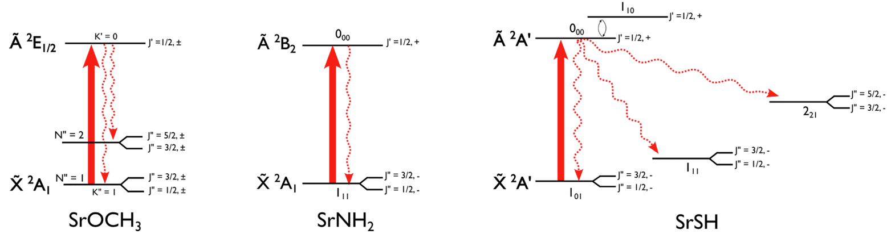
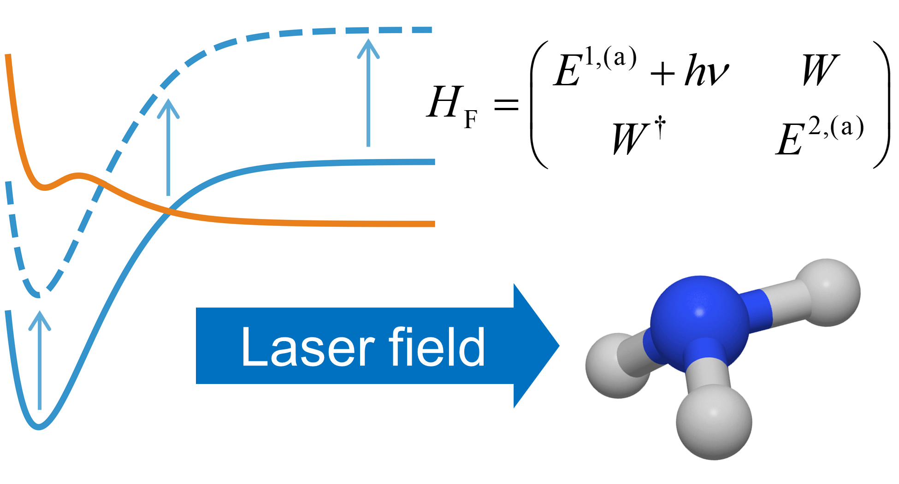
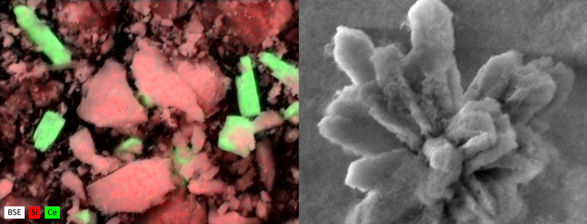
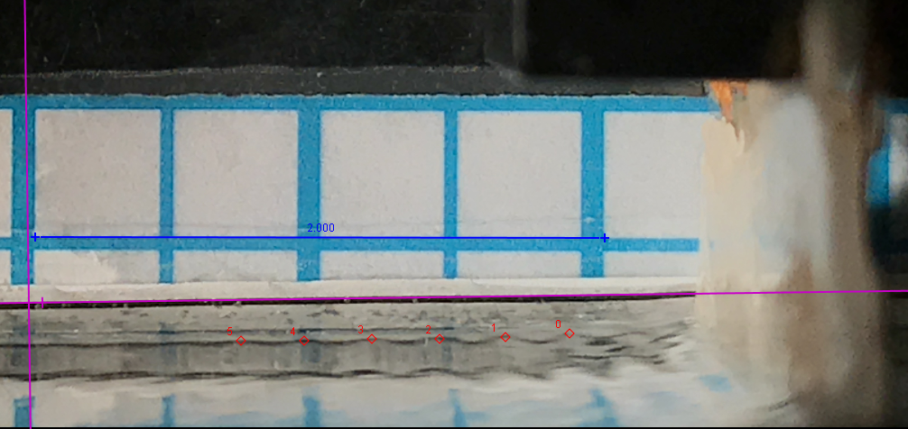
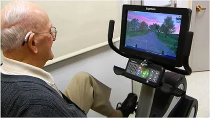

My research projects
Graduate research
Laser cooling
Principal investigator: Professor Lan Cheng
 Physicists can use lasers to cool down atoms and molecules to near absolute zero, which makes them easier to study. Compared to atoms and diatomic molecules, polyatomic molecules are much more difficult to cool because of their additional vibrational degrees of freedom. But polyatomic molecules are a promising option for precision measurement, and it has been proposed that they could play a vital role in the search for physics beyond the Standard Model. I am constructing potential energy surface fits for these polyatomic molecules, which can then be used to figure out how the laser cooling can be performed.
Light-induced conical intersections
Principal investigator: Professor David R. Yarkony (deceased)
 A conical intersection is a geometric orientation where two electronic states of a molecule have the same energy. They are important in photochemistry because they allow molecules to quickly lose electronic energy, and they play a vital role in human vision, DNA photoprotection, and photosynthesis. In 1995, it was said that "Ever since the development of the laser, the quest to use light to control the future of matter has been one of the Holy Grails of chemistry". Light–matter interactions can give rise to light-induced conical intersections (LICIs) by reshaping the potential energy surfaces. For this project, I studied how LICIs affect the photodissociation of ammonia. A Floquet Hamiltonian was used to implement the light interaction, and quantum chemical data was provided by diabatic potential energy, nonadiabatic coupling, dipole, and spin–orbit coupling matrix surfaces fitted using neural networks.
Presented at the 29th Dynamics of Molecular Collisions Conference
Published in The Journal of Physical Chemistry Letters
Presented at the 2024 Molecular Interactions and Dynamics Gordon Research Conference
Photodetachment spectroscopy simulation
Principal investigator: Professor David R. Yarkony (deceased)
 Anion ultraviolet photoelectron spectroscopy is a helpful tool that can provide a great deal of insight into the vibrational behavior of molecules.
Usually, it is relatively easy to simulate a molecule's spectrum: just calculate the Franck–Condon overlaps.
But this all falls apart for tetrazolyl (and other azolyls) because its lowest electronic states cross (a conical intersection).
More advanced techniques are needed that treat the interactions between electronic states, and I used one such approach to study tetrazolyl.
This molecule's complex and difficult-to-calculate electronic structure necessitated the use of a potential energy matrix model with fourth-order terms.
Other azolyls were previously studied using only second-order parameters without issue.
Anion ultraviolet photoelectron spectroscopy is a helpful tool that can provide a great deal of insight into the vibrational behavior of molecules.
Usually, it is relatively easy to simulate a molecule's spectrum: just calculate the Franck–Condon overlaps.
But this all falls apart for tetrazolyl (and other azolyls) because its lowest electronic states cross (a conical intersection).
More advanced techniques are needed that treat the interactions between electronic states, and I used one such approach to study tetrazolyl.
This molecule's complex and difficult-to-calculate electronic structure necessitated the use of a potential energy matrix model with fourth-order terms.
Other azolyls were previously studied using only second-order parameters without issue.
Published in The Journal of Chemical Physics
Presented at the 28th Dynamics of Molecular Collisions Conference
Undergraduate research
Microscopic Characterization and Elemental Mapping of Catalytic Aerogels
Advisor: Professor Mary K. Carroll (2024 ACS president)
 Automotive catalytic converters contain platinum-group metals, but mining them is environmentally destructive. Metal-containing aerogels are a promising alternative thanks to their unique properties including high specific surface area and heat resistance. I synthesized metal-infused aerogels using a hydraulic hot press with a patented rapid supercritical extraction method. I characterized nanostructure with scanning electron microscopy (SEM), energy-dispersive X-ray spectroscopy (EDS), powder X-ray diffraction (XRD), atomic force microscopy (AFM), and differential scanning calorimetry (DSC), all of which I operated myself. With conventional protocols, SEM is nearly impossible on aerogels because they are so insulating, and AFM is difficult because aerogels are so soft. I developed and implemented novel sample preparation techniques that enabled nanometer-resolution microscopy of these tricky materials.
Published in the Journal of Sol-Gel Science and Technology
Published in the Journal of Sol-Gel Science and Technology
Presented at the 31st Steinmetz Symposium ▶ Video
Presented at the ACS Spring 2021 National Meeting
Published in Emission Control Science and Technology
Presented at the 30th Steinmetz Symposium
Published in the Journal of Sol-Gel Science and Technology
Presented at the 2019 New York Six Undergraduate Research Conference
Presented at the 2019 ACS Northeast Regional Meeting
Presented at the 29th Steinmetz Symposium
Acknowledged in a publication in The Journal of Visualized Experiments
Acknowledged in a publication in The Journal of Supercritical Fluids
Liquid-Liquid Interfacial Assembly of Peptoid Sheets
Advisor: Professor Ellen Robertson
 Gold nanoparticles exhibit localized surface plasmon resonance (LSPR), which changes their color depending on their environment and how close they are to each other.
This is promising for sensing applications, including the detection of environmental toxins.
I synthesized peptoid monolayer sheets containing gold nanoparticles and used UV–Vis spectroscopy to assess LSPR activity.
Gold nanoparticles exhibit localized surface plasmon resonance (LSPR), which changes their color depending on their environment and how close they are to each other.
This is promising for sensing applications, including the detection of environmental toxins.
I synthesized peptoid monolayer sheets containing gold nanoparticles and used UV–Vis spectroscopy to assess LSPR activity.
Presented at the ACS Spring 2022 National Meeting
Published in Chemical Communications
Presented at the 30th Steinmetz Symposium
Presented at the 259th ACS National Meeting
Calculating Surface Tension with Capillary Waves
Advisor: Professor Jef Wagner
 I constructed an experimental apparatus to measure the surface tension coefficient of liquids. A wave-generating motor produced capillary waves on the surface of the sample liquid. To make the measurement, image tracking software was used to examine the dispersion relationship of the generated waves. Unlike some other experimental setups, ours can work on any fluid regardless of polarity.
Presented at the 29th Steinmetz Symposium
Interactive Physical and Cognitive Exercise System
Advisor: Professor Cay Anderson-Hanley
 I contributed to a neuropsychological study on the effect of exercise combined with puzzle games (neuro-exergaming) on cognitive health and wellness, including for patients coping with Alzheimer's and other challenges.
Acknowledged in a publication in Frontiers in Aging Neuroscience
Acknowledged in a publication in Clinical Interventions in Aging
Quantum chemistry PhD researcher
Johns Hopkins University
Baltimore, MD